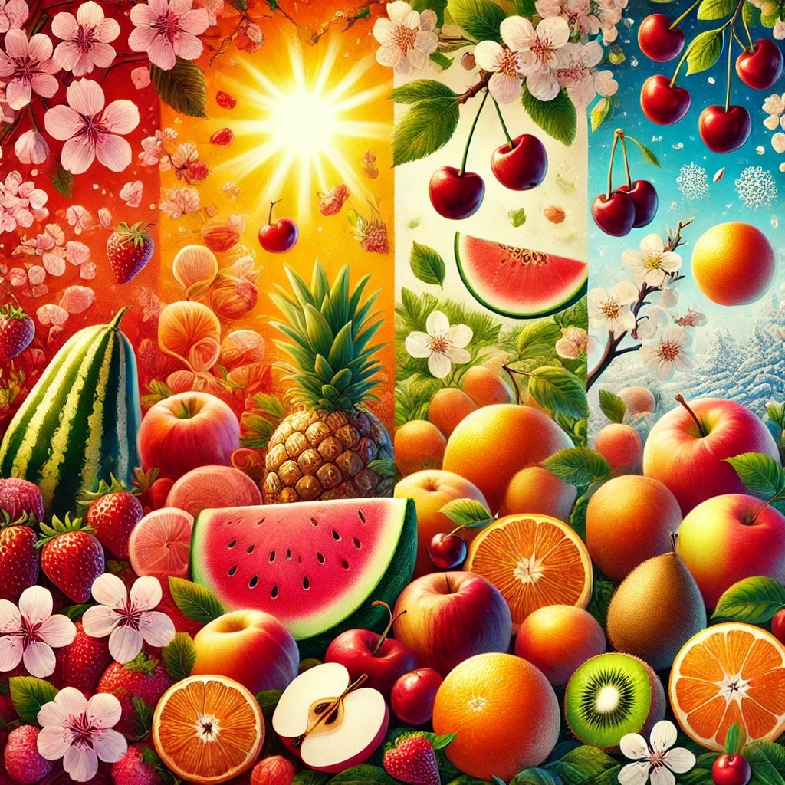

Découvrez les fruits au fil des saisons
Les fruits sont non seulement délicieux, mais ils varient aussi selon les saisons. Voici un aperçu des fruits disponibles à chaque moment de l'année :

Printemps
Fraises, cerises, et abricots font leur apparition.
Été
Les pêches, melons, et pastèques sont à leur apogée.
Automne
Poires, pommes, et raisins ravissent nos papilles.
Hiver
Les agrumes comme oranges, citrons et clémentines dominent les étals.